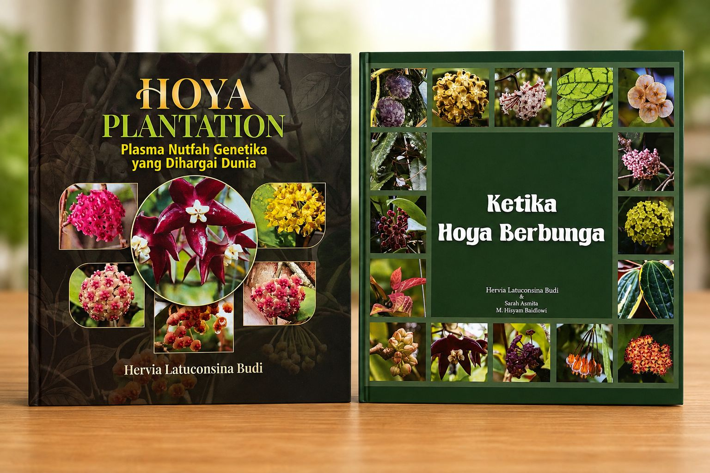
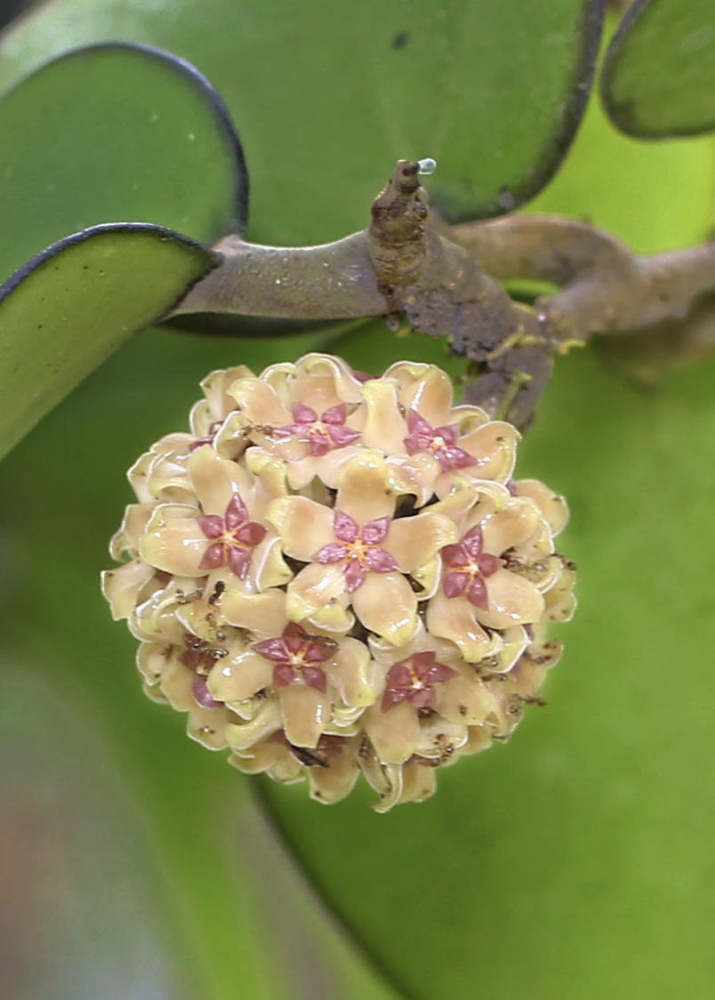
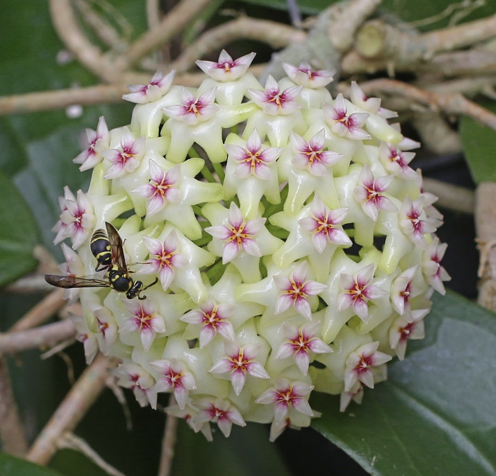
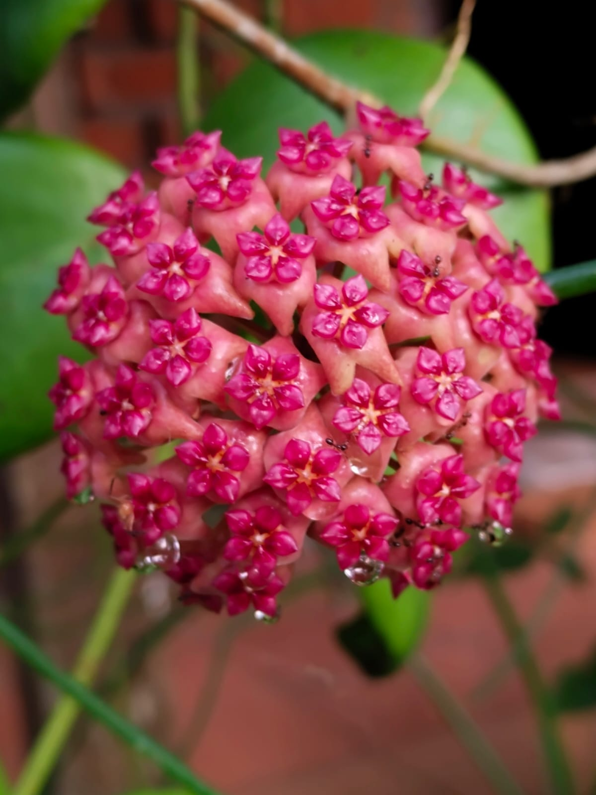
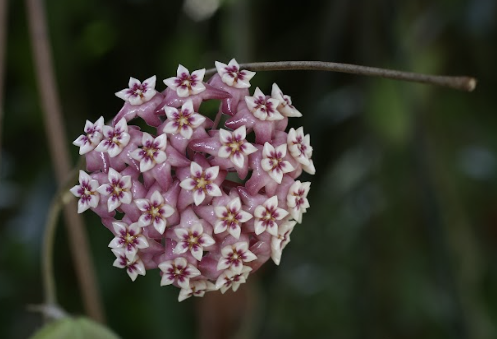
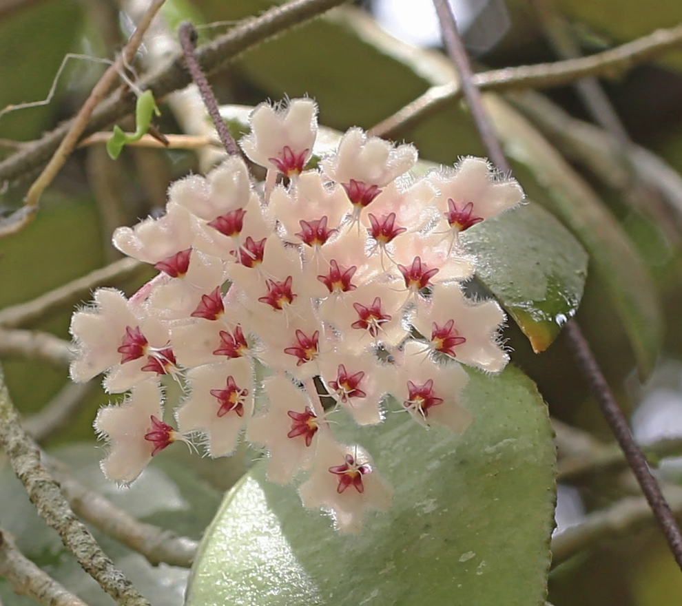
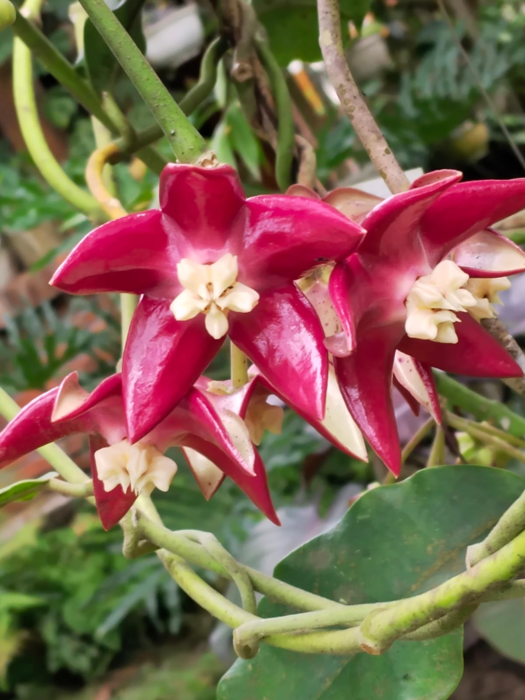

Perjalanan Mengenal Hoya
Berawal dari Melati Belanda, Hoya Rumah Lavia, hingga perjalanan mengenal Hoya Indonesia.
BUKU BOTANI INDONESIA
Kehadiran buku ini diharapkan menjadi jembatan bagi petani pelestari, pecinta tanaman hias, peneliti/pemulia tanaman dan generasi muda agar lebih menghargai serta melestarikan asset genetika bangsa yang sudah mendunia

“
"Hoya Indonesia harus menjadi tuan dinegeri sendiri sebagai dari upaya merawat bumi pertiwi negeri."

TENTANG BUKU
Dua buku ini mengajak pembaca mengenal Hoya lebih dekat, mulai dari karakteristik tanaman, keindahan bunga, keragaman spesies, hingga pengalaman dalam merawat dan melestarikannya.
Lebih dari sekadar referensi, keduanya merekam perjalanan, pengetahuan, dan kecintaan terhadap Hoya serta menjadi bagian dari upaya mengenalkan kekayaan biodiversitas Indonesia kepada masyarakat yang lebih luas.
Perkenalan “Sarah” dengan Hoya Lavia membuka perjalanan mengenal pesona Hoya Nusantara, dari Sumatera, Kalimantan, Jawa, Maluku, hingga Papua.
Mengulas tanaman Hoya dan sejarahnya, persebaran serta keanekaragamannya, hingga masa depan Hoya Indonesia dan harapan agar kekayaan ini semakin dikenal, dicintai, dan dihargai dunia.
GALERI HOYA
Beberapa keindahan Hoya yang menjadi bagian dari perjalanan dan dokumentasi buku ini.





DI DALAM BUKU
Dua buku yang membawa pembaca dari kisah personal mengenal Hoya hingga kekayaan, budidaya, dan pelestarian Hoya Indonesia.
Berawal dari Melati Belanda, Hoya Rumah Lavia, hingga perjalanan mengenal Hoya Indonesia.
Mengenal beragam varietas Hoya melalui koleksi dan dokumentasi yang dihimpun penulis.
Mengenal sejarah, persebaran, morfologi, habitat dan keragaman Hoya Indonesia.
Mengenal varietas-varietas Hoya yang telah terdaftar di PPVTP Kementerian Pertanian.
Dari perbanyakan tanaman hingga peluang Hoya untuk petani dan hortikultura.
Pelestarian Hoya, perlindungan habitat, serta potensi Hoya Indonesia di mata dunia.
PUBLIKASI & MEDIA
Liputan media mengenai pelestarian Hoya, kekayaan plasma nutfah Indonesia, dan perjalanan buku Hoya Plantation.
Pelestarian varietas Hoya, kekayaan plasma nutfah Indonesia, serta peluncuran buku Hoya Plantation.
Baca di Media Indonesia →Liputan mengenai upaya pelestarian Hoya sebagai bagian dari kekayaan sumber daya genetik Indonesia.
Baca di Suara Merdeka →TESTIMONI
“Bukunya sudah sampai, bangga banget liatnya, terus semangat bunda Hervia, proud of you melestarikan khasanah plasma nuftah genetika Ibu pertiwi.”
Assalamualaikum bu Evy… Alhamdulillah bukunya sdh sy terima. Maturnuwun. Bagus sekali.. utk pembelajaran dan memasyarakatkan tanaman hoya di Ind.
Takjub dg buku bunda Bab 1, Hoya tanamn misterius Bab 2, Negara terkaya spesies Hoya di Dunia Dan bab 8 bab penutup Masa depan Hoya Indonesia di mata Dunia.
DAPATKAN BUKUNYA
Buku ini dapat menjadi referensi, koleksi, sekaligus hadiah bagi para pecinta tanaman.
✓ Tersedia untuk pengiriman ke seluruh Indonesia
KONTAK
Untuk pembelian dalam jumlah banyak, kerja sama, komunitas, acara, maupun informasi mengenai buku silakan menghubungi kami.